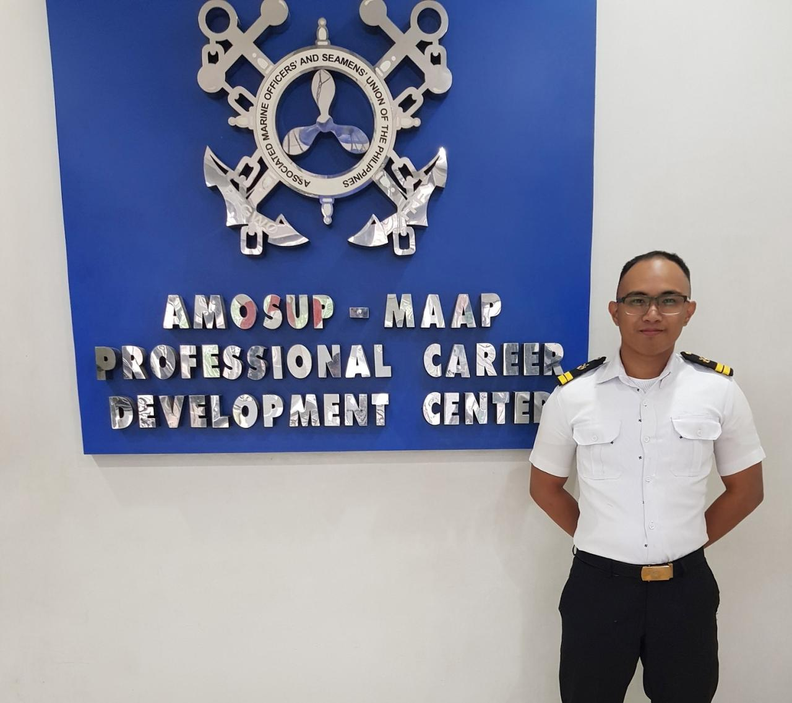

About Me
 I'm Gino Freud D. Hobayan , a first year computer science student at CIIT College of Arts and Technology
Before becoming a student at CIIT, I started working overseas at the age of 19 as a Seafarer
and became a licensed merchant marine officer,
but because of a massive external variable that was beyond my control (COVID-19),
I had to find a new job here in the Philippines. I worked in Sales during the pandemic
and I was able to earn and learn a lot about sales, marketing, branding, and personal finance.
It was hard since I was quiet, introverted, and didn't really have a big network.
Working in that industry was hard but not impossible, so I worked hard and I was able to develop my skills, maintained a growth mindset,
and through my efforts and persistence, I was able to survive in this challenging environment.
While working in sales I spent my free time learning SQL, Python, and Microsoft Excel.
I made my own portfolio and I eventually got a short internship as a data analyst but realized that I still lack a lot of skills
and knowledge in this field, and that led me here to CIIT.